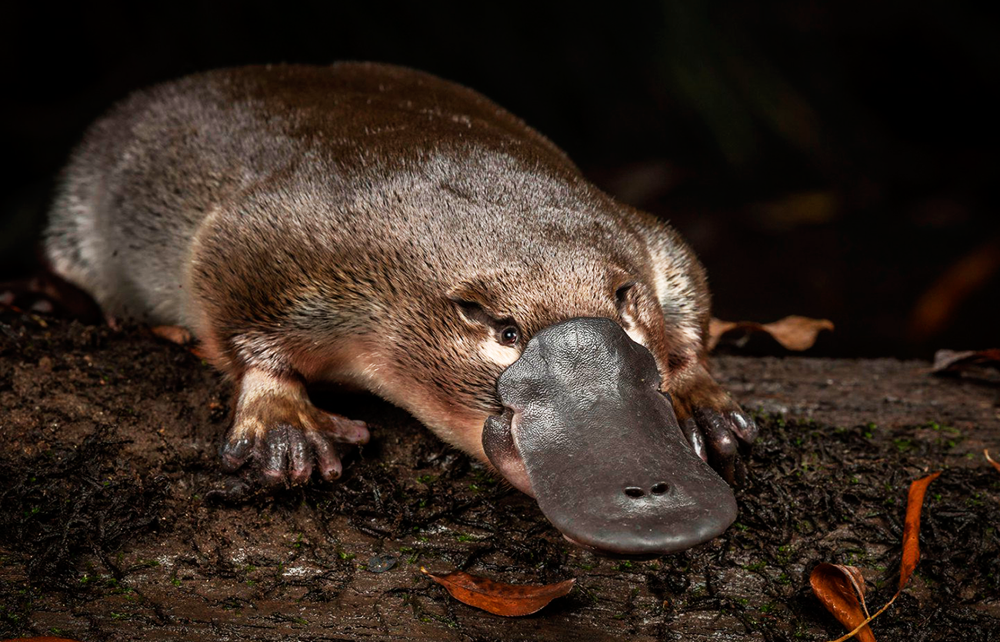

O ornitorrinco é um mamífero semi-aquático único, nativo da Austrália. Ele é conhecido por sua aparência peculiar, com um bico de pato, cauda de castor e patas de lontra. Além disso, o ornitorrinco é um dos poucos mamíferos que põem ovos!
 >Essa criatura fascinante é um exemplo da diversidade e das peculiaridades da vida selvagem da Austrália.